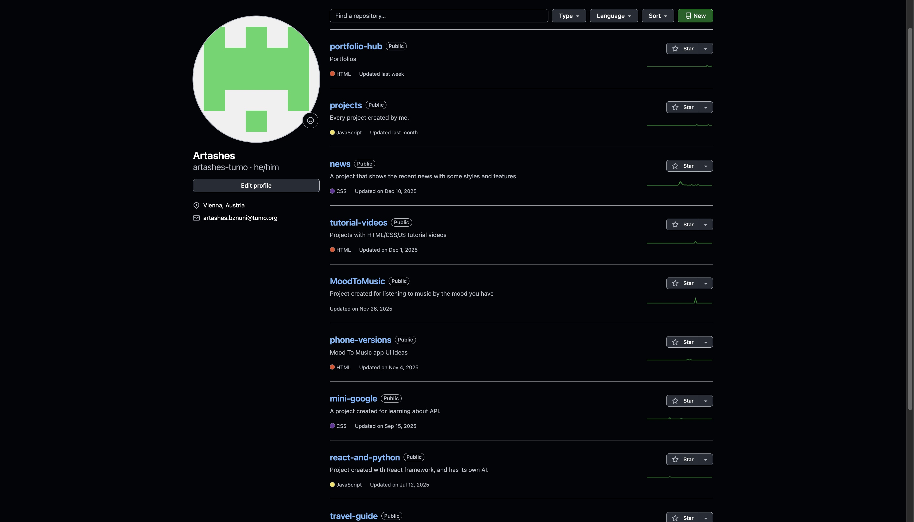
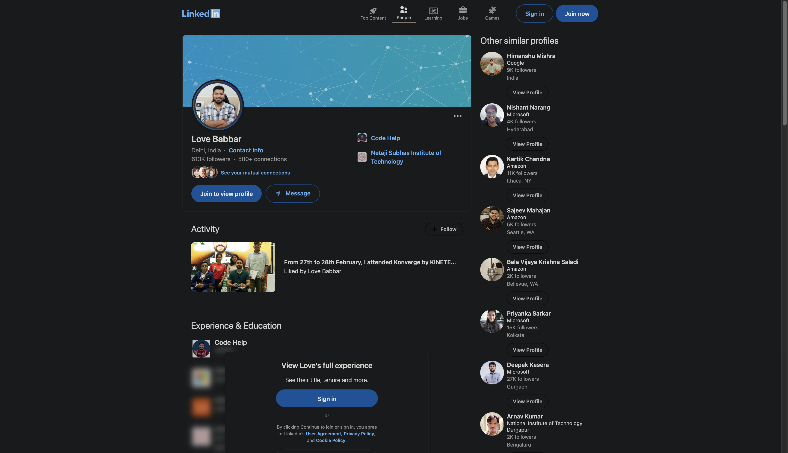
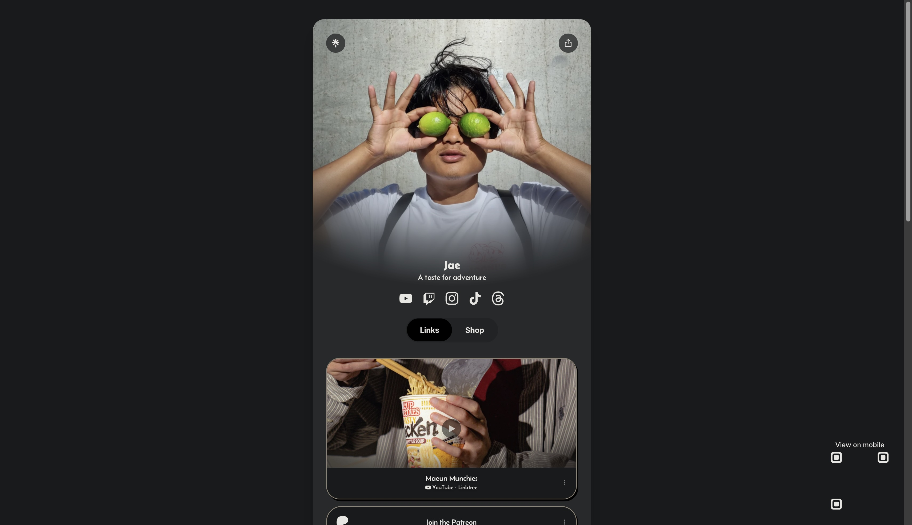
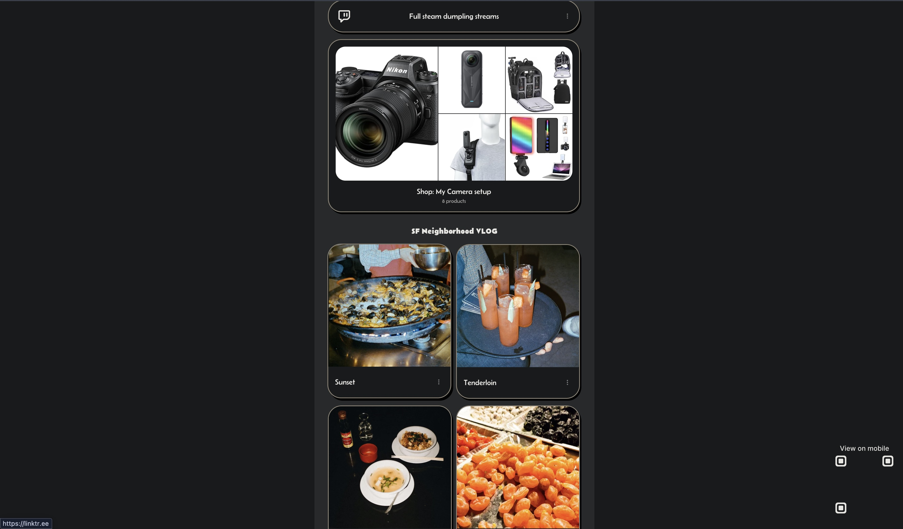

Criterion A — Planning / Investigating
Identifying the problem, researching users and solutions, and producing a research-informed design brief.
Project context: PortfolioHub is a web application that lets students create a profile (name, skills, projects, contact) and share it via a public page, while keeping editing tools inside a secure dashboard using authentication and Firestore.
A1 — Explain and justify the need for a solution
Situation and context
A website is commonly understood as a collection of web pages and resources that can be accessed through the World Wide Web using a browser. Websites are useful because they are easy to share by URL, work across devices, and can present information in a structured way.
In school projects, evidence of learning is often spread across many places (local files, repositories, cloud folders, slides, and different links). When evidence is fragmented, students find it harder to present their best work clearly, and teachers spend extra time locating and reviewing it.
The design problem
The problem PortfolioHub solves is that students typically do not have a single, consistent place to present their projects and skills. This causes unclear presentation, inefficient teacher review, and extra friction for external viewers.
Users affected by the problem
- Students: need one place to organise and share projects with context (skills, descriptions, links).
- Teachers: need a consistent structure to review progress and evidence efficiently.
- External reviewers: need quick access to a clear overview of abilities and project examples.
Why the problem matters
Educational literature describes how electronic portfolios support organising learning artefacts, showcasing progress over time, and communicating achievement—exactly the areas that become difficult when evidence is scattered.
Why a website is an appropriate solution
A web-based solution is appropriate because it is accessible by link, works without installation, and can combine public viewing with secure editing (authentication + database). PortfolioHub uses this by providing guest browsing and a private dashboard.
A2 — Identify and prioritise primary and secondary research
To design a solution that genuinely meets user needs, I planned both primary and secondary research. Priorities: 1 = highest (core user value), 5 = lowest (refinements).
| Research question | Why it matters (rationale) | Type | Priority | Method | Development output |
|---|---|---|---|---|---|
| What do teachers need to see first when reviewing a student portfolio? | Teacher review must be fast and consistent, so the site must surface evidence clearly. | Primary | 1 | Short teacher interview + task walkthrough using the live site | Final order of profile sections and required fields |
| What types of artefacts do students share most (repos, Drive links, PDFs, videos)? | The dashboard fields must match real student workflows. | Primary | 1 | Student survey (multiple choice) | Project form fields and supported link types |
| Can a guest understand how to browse and search without help? | Guest browsing is a key feature; onboarding must be intuitive. | Primary | 2 | Usability test: “find a project you like in under 2 minutes” | Navigation labels, search UI wording, clearer affordances |
| Which accessibility standards apply to forms, navigation, and focus states? | Accessibility reduces barriers and improves usability for all users. | Secondary | 3 | Review WCAG 2.2 guidance and relevant success criteria | Focus visibility, form labels, keyboard navigation |
| What authentication approach is reliable and appropriate for students? | Secure editing requires a simple, dependable login flow. | Secondary | 3 | Review Firebase Auth email/password documentation | Authentication decision and validation rules |
| What data structure best supports “one user = profile + many projects”? | Firestore structure must match UI needs and remain scalable. | Secondary | 4 | Study Firestore collections/documents model | Final schema (users collection + projects data approach) |
| What layout patterns make project cards scannable on mobile and desktop? | Users must be able to scan projects quickly and understand them. | Secondary | 5 | Analyse established portfolio/card UI patterns | Card layout rules and spacing/typography choices |
A3 — Analyse a range of existing products that inspire a solution
I analysed a range of existing platforms that solve similar “showcase and organise” problems in different ways. The goal was to identify design parts, their purposes, and the strengths/weaknesses that can inform PortfolioHub’s design. Screenshots from real / official sources are included below.
Product 1 — GitHub Profile (Pinned repositories)

Label key parts
- Public profile page
- Pinned / featured repositories section
- Repository metadata (name, description)
Purpose and function
Pinned items help users highlight their best work so viewers see strong examples quickly.
Complexities (strengths/weaknesses)
- Strength: fast scanning, strong for code projects.
- Weakness (most critical): not ideal for non-code school artefacts without workarounds; limited to 6 pins max.
Inspiration for PortfolioHub
PortfolioHub uses the same curation idea by presenting projects as cards that can be reviewed quickly, but supports any link type (repos, Drive, websites) with a consistent layout.
Product 2 — LinkedIn Profile (Projects / structured sections)

Label key parts
- Structured sections (about, experience, projects)
- Project entries with descriptions
- Optional media/link attachments
Purpose and function
Structured sections help viewers scan information quickly and understand capability at a glance.
Complexities (strengths/weaknesses)
- Strength: readable, consistent, review-friendly structure.
- Weakness (most critical): designed for professional recruiting, not school assessment evidence; less focus on educational artefacts.
Inspiration for PortfolioHub
PortfolioHub adopts structured sections (profile → skills → projects → contact), but targets a student audience and separates public viewing from private editing via authentication.
Product 3 — Linktree (single-link hub)


Label key parts
- Single landing page
- List of outbound links
- Basic branding/customisation
Purpose and function
A “one link” system reduces friction for sharing multiple destinations.
Complexities (strengths/weaknesses)
- Strength: extremely easy to share and understand.
- Weakness (most critical): link-first; lacks structured project context and evidence; viewers get no depth.
Inspiration for PortfolioHub
PortfolioHub keeps the low-friction sharing concept but adds structured project cards (title, description, link) and connects them to a user profile.
A4 — Develop a detailed design brief summarising relevant research
Revised design opportunity
Based on the problem analysis (A1) and insights from the research and product analysis (A2–A3), the revised design opportunity is:
Design brief statement: Create a student-centred portfolio web application that provides a structured public profile for viewing and a secure private dashboard for editing projects, reducing fragmentation of evidence and improving teacher review efficiency.
Broad functional requirements
- Users can register/login using email/password authentication.
- Users can edit profile details and manage project entries in a dashboard.
- A public profile renders skills and projects consistently from database data.
- A search page enables discovery of users and projects for guests and logged-in users.
Broad non-functional requirements
- Security: users must only be able to edit their own data using Firestore rules.
- Accessibility: navigation and forms should be keyboard-operable with visible focus.
- Usability: consistent cards, readable typography, clear section structure.
- Responsive design: layout must remain usable on mobile and desktop.
Benefits for users
- Students: one clear place to present and share work.
- Teachers: less time searching for evidence; more consistency for review.
- External viewers: quick understanding of skills and project examples.
Measurable success criteria
- Account flow: ≥90% of test users register and log in without help.
- Portfolio task: ≥90% add one project and see it on public profile within 60 seconds.
- Guest discovery: ≥80% of guests find a relevant project via Search in under 2 minutes.
- Consistency: 100% of projects render in the same card format.
- Security: users cannot edit another user’s document (rules verified).
- Accessibility: all interactive elements usable by keyboard with visible focus.
Key research-informed decisions
- Card-based project display for fast scanning (GitHub/LinkedIn patterns).
- Search function for discovery (inspired by Notion-like tools).
- Secure editing separated from public viewing using authentication and database rules.
- Consistent structure and headings to support teacher review.